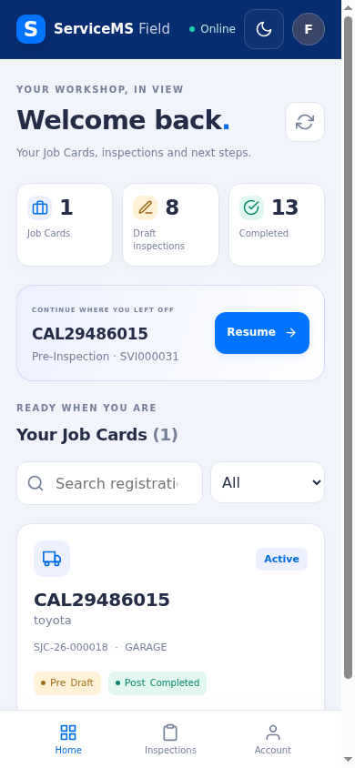

The original design images are now included in design-reference. There are two original sheets and one supplied mobile-flow crop. The source image bytes are unchanged; CSS masks show matched details for visual review.
Original ServiceMS reference
Actual pilot PWA



Visual changes after reviewing the originals
Navy application headerServiceMS blue actions/progressGreen completionSupported dark canvas
| Original design direction | Implemented refinement |
|---|---|
| Light-first blue/navy shell and compact assigned-job cards | Brighter ServiceMS blue replaces the earlier violet accent. Mobile metrics and resume cards are denser; search and filter share one row, bringing Job Cards into the first screen. |
| Compact checklist with clear progress, condition choices and photo access | Stage-specific titles, blue progress, compact rows and expandable optional remarks reduce scrolling without hiding mandatory answers or evidence requirements. |
| Tablet navigation with checklist and evidence side by side | At 1024px and above, the section rail, checklist and evidence/findings summary use three coordinated columns. Smaller tablets retain the adaptive rail layout. |
| Photographic evidence grid and location/findings | Camera/library actions, multiple private uploads, retry/progress, larger previews, modal review and manual GPS capture remain functional. |
| Green completion with return-to-Job-Card navigation | Green Complete Inspection action and completion wash, protected receipt, View Inspection and Return to Job Card. |
Backend rules preserved where art differs
| Mockup element | Actual behavior and reason |
|---|---|
| Pending / In Progress labels | Inspection lifecycle remains Draft / Completed. Not started is a derived stage label; Job Card status is displayed separately. |
| Fixed questions, simple checkboxes and damage badges | Actual frozen template items and configured answer values are retained, including Check/Data fields, remarks and required item photographs. No damage classification is invented. |
| Four required photographic angles and delete icons | Evidence is optional unless required by the stage or checklist. No fixed angles are imposed. Completed evidence cannot be deleted; changes use corrections. |
| Live camera view, flash and lens controls | Camera launches the device/browser image capture interface; the PWA does not fake a live camera preview. Physical Android/iOS behavior remains a device test. |
| Vehicle image and booking information | The existing Field API exposes permitted vehicle/model/customer/workshop details. No stock vehicle image or booking date is substituted for data the API does not return. |
| Notifications, More/Settings, future modules and offline-ready architecture | Only functional Home, Inspections and Account destinations are exposed. No fake notification badge or offline synchronization is added. Private data stays online-only. |
| Six depicted mobile screens | The guided interface retains the separately requested vehicle overview and pre-completion review. The reference's completion screen is a separate protected confirmation. |
| Dark support note without a complete dark artwork set | The same layout and new blue accents are provided in dark mode; dark screenshots are compared with the corresponding light artwork for structure, not represented as a supplied dark mockup. |
Authenticated captures
Original full design sheets
All actual photographs are explicitly labelled QA upload fixtures. GPS, viewport/orientation and keyboard behavior were simulated in Chromium. No physical-device results or Product Owner approval are claimed. See browser results, comparison findings and verification report.